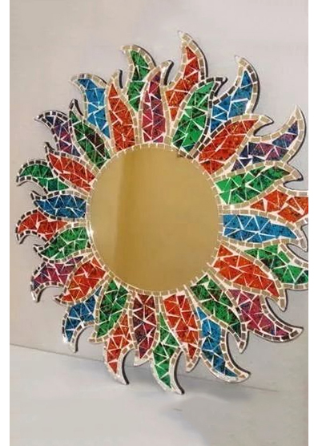

El reciclaje y las manualidades van unidos de la mano, ideas y consejos para reutilizar todo tipo de objetos que, de forma habitual, podemos encontrar en una vivienda. Botellas, objetos de plástico, madera o hierro, son materiales idóneos para recrear todo tipo de elementos decorativos o utensilios como podrían ser jarrones, lámparas, muebles, figuras... Aquí encontraréis algunas inspiradoras ideas de manos de nuestros colaboradores, con creaciones originales para vuestro hogar, ya sea en el baño, cocina, sala de estar o cualquier rincón de la casa, oficina o lugar que queráis redecorar.
Convertir y crear plástico viejo en un taburete fresco, artesania de EcoIdea

Con vidrio reciclado y esmalte de uñas, puedes crear un espejo a tu medida

Hermosa lámpara con palitos de paleta, manualidades a su alcance